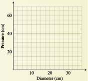

Chapter 3 Power Functions
¶We next turn our attention to a large and useful family of functions called power functions. This family includes transformations of several of the basic functions, such as
The first function gives the gravitational force, \(F\text{,}\) exerted by the sun on an object at a distance, \(d\text{.}\) The second function gives the speed of sound, \(S\text{,}\) in terms of the air temperature, \(T\text{.}\)
By extending our definition of exponent to include negative numbers and fractions, we will be able to express such functions in the form \(f (x) = kx^n\text{.}\) Here is an example of a power function with a fractional exponent.
In 1932, Max Kleiber published a remarkable equation for the metabolic rate of an animal as a function of its mass. The table at right shows the mass of various animals in kilograms and their metabolic rates, in kilocalories per day. A plot of the data, resulting in the famous “mouse-to-elephant” curve, is shown in the figure.

| Animal | Mass (kg) | Metabolic rate (kcal/day) |
| Baboon | \(6.2\) | \(300\) |
| Cat | \(3.0\) | \(150\) |
| Chimpanzee | \(38\) | \(1110\) |
| Cow | \(400\) | \(6080\) |
| Dog | \(15.5\) | \(520\) |
| Elephant | \(3670\) | \(48,800\) |
| Guinea pig | \(0.8\) | \(48\) |
| Human | \(65\) | \(1660\) |
| Mouse | \(0.02\) | \(3.4\) |
| Pig | \(250\) | \(4350\) |
| Polar bear | \(600\) | \(8340\) |
| Rabbit | \(3.5\) | \(165\) |
| Rat | \(0.2\) | \(28\) |
| Sheep | \(50\) | \(1300\) |
Kleiber modeled his data by the power function
where \(P\) is the metabolic rate and \(m\) is the mass of the animal. Kleiber's rule initiated the use of allometric equations, or power functions of mass, in physiology.
Investigation 3.0.1. Inflating a Balloon.
If you blow air into a balloon, what do you think will happen to the air pressure inside the balloon as it expands? Here is what two physics books have to say:
"The greater the pressure inside, the greater the balloon’s volume."
―Boleman, Jay
Physics, a Window on Our World
"Contrary to the process of blowing up a toy balloon, the pressure required to force air into a bubble decreases with bubble size."
―Sears, Francis
Mechanics, Heat, and Sound
- Based on these two quotes and your own intuition, sketch a graph showing how pressure changes as a function of the diameter of the balloon. Describe your graph: Is it increasing or decreasing? Is it concave up (bending upward) or concave down (bending downward)?
In 1998, two high school students, April Leonardo and Tolu Noah, decided to see for themselves how the pressure inside a balloon changes as the balloon expands. Using a column of water to measure pressure, they collected the following data while blowing up a balloon. Graph their data on the grid.
Diameter (cm) Pressure
(cm H2O)5.7 60.6 7.3 57.2 8.2 47.9 10.7 38.1 12.0 37.1 14.6 31.9 17.5 28.1 20.5 26.4 23.5 28 25.2 31.4 26.1 34.0 27.5 37.2 28.4 37.9 29.0 40.7 30.0 43.3 30.6 46.6 31.3 50.0 32.2 61.9 - Describe the graph of April and Tolu's data. How does it compare to your graph in part (2)? Do their data confirm the predictions of the physics books? (We will return to April and Tolu’s experiment in Section 3.4.)